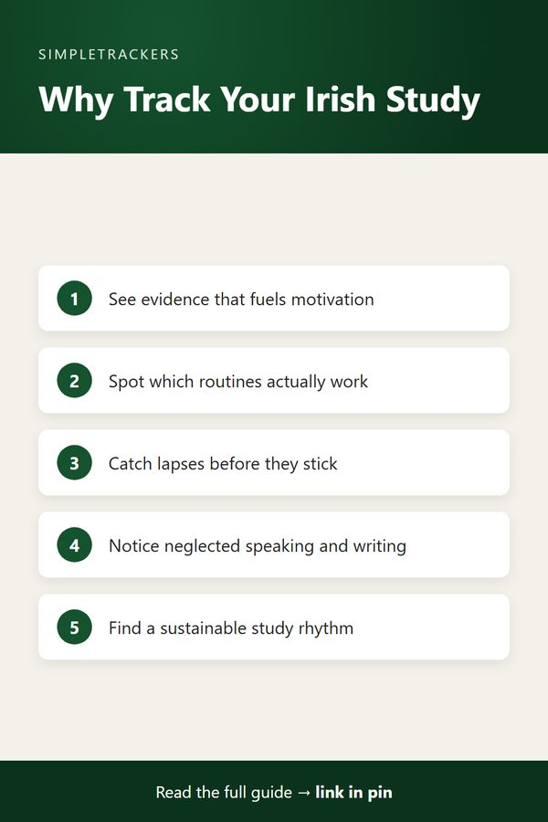

<!doctype html>
<html lang="en">
<head>
<script async src="https://pagead2.googlesyndication.com/pagead/js/adsbygoogle.js?client=ca-pub-7383810158576704" crossorigin="anonymous"></script>
<meta charset="utf-8">
<title>Why Tracking Your Irish Study Matters</title>
<meta name="viewport" content="width=device-width, initial-scale=1">
<meta name="description" content="Why tracking your Irish study matters for self-taught learners: spot gaps, stay motivated, and see progress you would otherwise miss.">
<link rel="canonical" href="https://ghengoy.github.io/gaeilge-tracker/why-tracking-your-irish-study-matters.html">
<meta property="og:type" content="article">
<meta property="og:title" content="Why Tracking Your Irish Study Matters">
<meta property="og:description" content="Why tracking your Irish study matters for self-taught learners: spot gaps, stay motivated, and see progress you would otherwise miss.">
<meta property="og:url" content="https://ghengoy.github.io/gaeilge-tracker/why-tracking-your-irish-study-matters.html">
<meta property="og:image" content="https://ghengoy.github.io/gaeilge-tracker/images/hero/why-tracking-your-irish-study-matters.jpg">
<meta name="p:domain_verify" content="ed2ca7fb71cecfffeba5d895002ee1d1"/>
<script data-goatcounter="https://ghengoy.goatcounter.com/count" async src="//gc.zgo.at/count.js"></script>
<style>
  :root { --accent: #14532D; --accent-dark: #0B331C; --tint: #E8F2EC; --ink: #1f2328; --muted: #5d6470;
          --line: #e4e1da; --paper: #fbfaf7; --card: #ffffff; }
  * { box-sizing: border-box; }
  body { margin: 0; background: var(--paper); color: var(--ink); font-family: -apple-system, BlinkMacSystemFont, "Segoe UI", Roboto, "Helvetica Neue", Arial, sans-serif;
         font-size: 18px; line-height: 1.75; -webkit-font-smoothing: antialiased; }
  a { color: var(--accent); text-underline-offset: 3px; }
  a:hover { color: var(--accent-dark); }
  img { max-width: 100%; height: auto; }
  .site-header { background: var(--card); border-bottom: 1px solid var(--line); }
  .site-header .inner { max-width: 760px; margin: 0 auto; padding: 14px 20px; display: flex; align-items: center; justify-content: space-between; gap: 16px; flex-wrap: wrap; }
  .brand { font-weight: 700; color: var(--ink); text-decoration: none; font-size: 17px; display: flex; align-items: center; gap: 10px; }
  .brand-mark { width: 28px; height: 28px; border-radius: 8px; background: var(--accent); display: inline-block; position: relative; }
  .brand-mark::after { content: ""; position: absolute; left: 7px; top: 8px; width: 14px; height: 3px; background: #fff; border-radius: 2px;
                       box-shadow: 0 5px 0 #fff, 0 10px 0 rgba(255,255,255,.6); }
  .site-header nav { display: flex; gap: 18px; font-size: 15px; }
  .site-header nav a { color: var(--muted); text-decoration: none; }
  .site-header nav a:hover { color: var(--accent); }
  main { max-width: 760px; margin: 0 auto; padding: 32px 20px 56px; }
  article > h1, main > h1 { font-size: clamp(30px, 5vw, 42px); line-height: 1.2; letter-spacing: -0.02em; margin: 8px 0 12px; }
  h2 { font-size: 27px; line-height: 1.3; letter-spacing: -0.01em; margin: 52px 0 14px; padding-top: 6px; scroll-margin-top: 16px; }
  h3 { font-size: 21px; line-height: 1.35; margin: 32px 0 8px; }
  p { margin: 0 0 20px; }
  ul, ol { padding-left: 1.3em; margin: 0 0 22px; }
  li { margin-bottom: 8px; }
  li::marker { color: var(--accent); }
  strong { font-weight: 650; }
  .pillar-link { font-size: 15px; margin: 0 0 4px; }
  .pillar-link a { text-decoration: none; }
  .post-meta { color: var(--muted); font-size: 15px; margin: 0 0 24px; }
  .post-hero { margin: 0 0 28px; }
  .post-hero img { width: 100%; aspect-ratio: 16 / 9; object-fit: cover; border-radius: 14px; display: block; background: var(--tint); }
  figcaption { font-size: 13px; color: var(--muted); margin-top: 8px; line-height: 1.5; }
  figcaption a { color: var(--muted); }
  .toc { background: var(--card); border: 1px solid var(--line); border-radius: 12px; padding: 18px 22px 8px; margin: 0 0 32px; font-size: 16px; }
  .toc-title { font-weight: 700; margin: 0 0 8px; font-size: 14px; letter-spacing: .06em; text-transform: uppercase; color: var(--muted); }
  .toc ol { margin: 0 0 10px; }
  .toc li { margin-bottom: 4px; }
  .toc a { text-decoration: none; }
  .key-takeaways, .callout { border-radius: 12px; padding: 20px 24px 6px; margin: 0 0 30px; }
  .key-takeaways { background: var(--tint); border-left: 5px solid var(--accent); }
  .key-takeaways ul { margin-bottom: 14px; }
  .box-title { font-weight: 700; margin: 0 0 8px; font-size: 14px; letter-spacing: .06em; text-transform: uppercase; color: var(--accent-dark); }
  .callout { background: var(--card); border: 1px solid var(--line); border-left: 5px solid var(--accent); }
  .callout.note { border-left-color: #b7791f; }
  .callout.note .box-title { color: #8a5a12; }
  .steps { list-style: none; counter-reset: step; padding-left: 0; }
  .steps > li { counter-increment: step; position: relative; padding-left: 52px; margin-bottom: 18px; }
  .steps > li::before { content: counter(step); position: absolute; left: 0; top: 0; width: 34px; height: 34px; border-radius: 50%;
                        background: var(--accent); color: #fff; font-weight: 700; font-size: 16px; display: flex; align-items: center; justify-content: center; }
  .table-wrap { overflow-x: auto; margin: 0 0 28px; border: 1px solid var(--line); border-radius: 12px; background: var(--card); }
  table { border-collapse: collapse; width: 100%; font-size: 16px; line-height: 1.5; }
  th, td { text-align: left; padding: 12px 16px; border-bottom: 1px solid var(--line); vertical-align: top; }
  th { background: var(--tint); color: var(--accent-dark); font-weight: 700; }
  tr:last-child td { border-bottom: 0; }
  .pin-figure { margin: 36px auto; max-width: 400px; text-align: center; }
  .pin-figure img { border-radius: 12px; box-shadow: 0 10px 30px rgba(0,0,0,.12); display: block; }
  blockquote { margin: 0 0 24px; padding: 4px 0 4px 20px; border-left: 3px solid var(--line); color: var(--muted); font-style: italic; }
  .post-cta { display: flex; gap: 24px; align-items: center; background: var(--card); border: 1px solid var(--line); border-top: 5px solid var(--accent);
              border-radius: 14px; padding: 24px; margin: 48px 0 8px; }
  .post-cta img { width: 150px; border-radius: 10px; flex-shrink: 0; }
  .post-cta h3 { margin: 2px 0 6px; }
  .post-cta p { margin-bottom: 12px; font-size: 16px; }
  .cta-kicker { font-size: 13px !important; letter-spacing: .06em; text-transform: uppercase; color: var(--muted); margin: 0 !important; }
  .buy-button { display: inline-block; background: var(--accent); color: #fff !important; padding: 12px 22px; border-radius: 10px; text-decoration: none; font-weight: 700; font-size: 16px; }
  .buy-button:hover { background: var(--accent-dark); }
  .product-box { background: var(--card); border: 1px solid var(--line); border-radius: 14px; padding: 24px; margin: 24px 0 36px; display: grid; grid-template-columns: 200px 1fr; gap: 0 24px; align-items: center; }
  .product-box img { width: 200px; border-radius: 10px; grid-row: span 3; }
  .product-box h3 { margin: 0 0 6px; }
  .product-box p { margin-bottom: 12px; font-size: 16px; }
  .product-grid { display: grid; grid-template-columns: repeat(auto-fill, minmax(160px, 1fr)); gap: 16px; margin: 12px 0 36px; }
  .product-card { display: flex; flex-direction: column; gap: 4px; background: var(--card); border: 1px solid var(--line); border-radius: 12px; padding: 12px; color: var(--ink); text-decoration: none; font-size: 15px; line-height: 1.4; }
  .product-card:hover { border-color: var(--accent); }
  .product-card img { width: 100%; border-radius: 8px; margin-bottom: 4px; }
  .product-card span { color: var(--muted); }
  .product-card .price { color: var(--accent); font-weight: 700; }
  .post-list { list-style: none; padding: 0; display: grid; gap: 16px; }
  .post-list li { margin: 0; }
  .post-card { display: flex; gap: 18px; background: var(--card); border: 1px solid var(--line); border-radius: 14px; overflow: hidden; color: var(--ink); text-decoration: none; }
  .post-card:hover { border-color: var(--accent); }
  .post-card img { width: 200px; object-fit: cover; flex-shrink: 0; background: var(--tint); }
  .post-card-text { display: flex; flex-direction: column; gap: 6px; padding: 16px 18px 16px 0; }
  .post-card-text strong { font-size: 19px; line-height: 1.35; }
  .post-card-desc { color: var(--muted); font-size: 15px; line-height: 1.55; }
  .post-card-date { color: var(--muted); font-size: 13px; }
  .site-footer { border-top: 1px solid var(--line); background: var(--card); color: var(--muted); font-size: 15px; }
  .site-footer .inner { max-width: 760px; margin: 0 auto; padding: 28px 20px; display: flex; justify-content: space-between; gap: 16px; flex-wrap: wrap; }
  .site-footer p { margin: 0; }
  @media (max-width: 600px) {
    body { font-size: 17px; }
    h2 { font-size: 23px; margin-top: 40px; }
    .post-cta, .post-card { flex-direction: column; }
    .post-cta img { width: 120px; }
    .post-card img { width: 100%; aspect-ratio: 16 / 9; }
    .post-card-text { padding: 0 16p
<header class="site-header"><div class="inner">
<a class="brand" href="index.html"><span class="brand-mark" aria-hidden="true"></span>Irish Self-Study</a>
<nav><a href="index.html">Guides</a><a href="pillar-guide.html">Start here</a></nav>
</div></header>
<main>
<article>
<h1>Why Tracking Your Irish Study Matters</h1>
<p class="pillar-link"><a href="pillar-guide.html">&larr; Back to the Complete Irish Gaelic Study Guide</a></p>
<p class="post-meta"><time datetime="2026-08-15">August 15, 2026</time> &middot; 4 min read</p>
<figure class="post-hero"><figcaption>Photo: <a href="https://www.flickr.com/photos/132795455@N08/18692128651" rel="nofollow">Image Catalog</a>, <a href="https://creativecommons.org/publicdomain/zero/1.0/" rel="license nofollow">CC0</a></figcaption></figure>
<div class="key-takeaways">
<p class="box-title">Key takeaways</p>
<ul>
<li><strong>Progress is invisible without measurement:</strong> study sessions blur together unless you capture them.</li>
<li><strong>Three immediate benefits:</strong> motivation through visible evidence, pattern recognition, and accountability without guilt.</li>
<li><strong>Every learner benefits:</strong> heritage learners, hobbyists and TEG candidates each get something different from a log.</li>
<li><strong>Keep it simple:</strong> hours, vocabulary, grammar and time per skill are enough. The goal is visibility, not perfection.</li>
</ul>
</div>
<nav class="toc" aria-label="Contents"><p class="toc-title">In this guide</p>
<ol>
<li><a href="#the-power-of-visibility-in-self-study">The Power of Visibility in Self-Study</a></li>
<li><a href="#why-tracking-changes-everything">Why Tracking Changes Everything</a></li>
<li><a href="#the-different-reasons-for-tracking">The Different Reasons for Tracking</a></li>
<li><a href="#the-cost-of-not-tracking">The Cost of Not Tracking</a></li>
<li><a href="#start-where-you-are">Start Where You Are</a></li>
</ol></nav>
<h2 id="the-power-of-visibility-in-self-study">The Power of Visibility in Self-Study</h2>
<p>Learning Irish as a self-taught student is a profoundly personal journey. Whether you're reconnecting with your heritage, pursuing cultural curiosity, preparing for formal certification, or simply loving the language itself, one thing remains constant: progress feels invisible when you don't measure it.</p>
<p>Language learning happens at the edge of consciousness. You don't always notice the moment you stop mentally translating to English, or when a grammar pattern finally clicks into place.</p>
<p>You might finish a study session and think "did I really get anything done?" Without a system to capture what you've done, weeks can blur together without a sense of accumulation.</p>

<h2 id="why-tracking-changes-everything">Why Tracking Changes Everything</h2>
<p>Tracking your Irish study has three immediate benefits that directly impact your learning outcomes:</p>
<ul>
<li><strong>Motivation through visibility.</strong> When you see that you've logged 25 hours of listening practice this month, or that you've learned 150 new words, your brain shifts from "I'm trying" to "I'm making progress." This is not psychology magic; it's the power of evidence.</li>
<li><strong>Pattern recognition.</strong> A tracker reveals which parts of your routine work and which don't. Maybe you'll notice you learn best when you combine reading with speaking practice. Maybe you'll discover that short daily sessions beat weekend binges. These patterns emerge only when you can see your data over time.</li>
<li><strong>Accountability without guilt.</strong> A simple log isn't a judgment system; it's a mirror. If you miss three days of study, you see it immediately. This isn't about shame. It's about catching yourself before a lapse becomes an excuse, so you can adjust your expectations, your schedule, or your approach based on honest data rather than optimistic assumptions.</li>
</ul>
<div class="callout tip">
<p class="box-title">Progress drives the habit</p>
<p>Motivation isn't what makes you stick to a habit; progress is.</p>
</div>

<figure class="pin-figure">

<figcaption>Save this summary to Pinterest for later.</figcaption>
</figure>

<h2 id="the-different-reasons-for-tracking">The Different Reasons for Tracking</h2>
<p>Not everyone tracks their Irish study for the same reason, and that's fine. A tracker that serves all motivations is far more valuable than one built for a single use case.</p>
<div class="table-wrap">
<table>
<thead><tr><th>If you are...</th><th>Tracking helps you...</th></tr></thead>
<tbody>
<tr><td>A <strong>heritage learner</strong> reconnecting with your family's language</td><td>See that slow, consistent effort matters. A conversation with a native speaker every week, combined with regular reading and listening, compounds into genuine capability, and a tracker captures this reality.</td></tr>
<tr><td>A <strong>hobbyist</strong> learning Irish because you love how it sounds or the culture it represents</td><td>Stay honest about how much time you're really investing, and find the sustainable rhythm that fits your life rather than burning out chasing an imaginary ideal.</td></tr>
<tr><td>Preparing for the <strong>Teastas Eorpach na Gaeilge (TEG)</strong> exam</td><td>Know whether your mock exam scores are trending upward, whether you're hitting your target study hours, and how many days remain to fine-tune your weak areas. A system designed for this removes the guesswork.</td></tr>
</tbody>
</table>
</div>

<h2 id="the-cost-of-not-tracking">The Cost of Not Tracking</h2>
<p>Self-study Irish without tracking has hidden costs that compound:</p>
<ul>
<li><strong>Passive repetition.</strong> You might repeat the same vocabulary passively instead of graduating to new material.</li>
<li><strong>Neglected skills.</strong> You might neglect speaking or writing because they feel less productive than comfortable listening sessions.</li>
<li><strong>False confidence.</strong> You might study for months feeling like you're making progress, only to discover in conversation that you haven't actually internalized much.</li>
</ul>
<p>Conversely, learners who track their study habits report:</p>
<ul>
<li>Higher confidence in their abilities.</li>
<li>Better retention of vocabulary.</li>
<li>More balanced skill development.</li>
<li>Critically, the psychological satisfaction of seeing evidence that their effort is working.</li>
</ul>

<h2 id="start-where-you-are">Start Where You Are</h2>
<p>You don't need an elaborate system. A simple log is often more valuable than no system at all. Capture:</p>
<ul>
<li>Study hours</li>
<li>Vocabulary learned</li>
<li>Grammar patterns covered</li>
<li>Time spent on each skill (listening, speaking, reading, writing)</li>
</ul>
<p>The goal isn't perfection; it's visibility.</p>
<p>The Irish Gaelic Self-Study Progress Tracker at <a href="https://kimnet8.gumroad.com/l/kanmzp">https://kimnet8.gumroad.com/l/kanmzp</a> is designed specifically for this purpose—to give you a clear, straightforward way to log your progress and see the patterns that matter for your learning.</p>
<p>Start tracking today. Track honestly, track consistently, and let the evidence of your effort fuel your next phase of learning.</p>

<aside class="post-cta">

<div><p class="cta-kicker">Make it easy to keep track</p>
<h3>Irish Gaelic Self-Study Progress Tracker</h3>
<p>A ready-to-use spreadsheet and guide for logging your study sessions and seeing real progress.</p>
<p><a class="buy-button" href="https://kimnet8.gumroad.com/l/kanmzp">Get the Tracker &middot; $15.99</a></p></div>
</aside>

</article>
</main>
<footer class="site-footer"><div class="inner">
<p><a href="https://gaeilge-tracker.beehiiv.com/subscribe">Get an email when new guides go live</a></p>
<p>&copy; 2026 <a href="/">SimpleTrackers</a> &middot; <a href="/about.html">About</a> &middot; <a href="/contact.html">Contact</a> &middot; <a href="/privacy.html">Privacy</a></p>
</div></footer> href="https://gaeilge-tracker.beehiiv.com/subscribe">Get an email when new guides go live</a></p>
<p>&copy; 2026 SimpleTrackers</p>
</div></footer>
</body>
</html>
